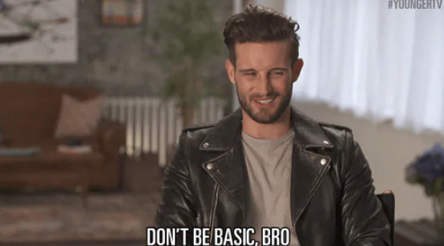

B566 · Men’s Retreat: Hold Your Ground
Hi {first_name},
There’s a term for people who are so good at being what they are “supposed” to be. They’re predictable on almost everything because they’ve internalized expectations that come from the external culture.

Here’s the truth:
Men won’t feel fully alive until their values and actions are rooted squarely in their own hearts and minds.
Trusting yourself about what you truly value and not caving to outside pressure is huge for self-respect.
How will your life change when you know yourself well enough to say “no” regardless of the pressure?
The good news is, you don’t have to wait to develop yourself until you’re in life and death circumstances. What you need is some intentional discomfort in the right places and the support to make new choices when that discomfort arises.
Here is the plan:
Hold Your Ground Retreat For Men
The Hold Your Ground retreat is happening October 28-31 at Belcampo Farms, sitting at the foot of Mount Shasta in Northern California.
If you’re a man who wants to live confidently even when the pressure is on, the Hold Your Ground Retreat is for you. Click here to get the details along with booking a discovery call directly with me.
-Mike
P.S. Men want to feel powerful, but power, at least the kind I want to develop, is something you develop internally. You can’t buy it and you can’t get certified in it. Register for the Hold Your Ground retreat and live powerfully. |